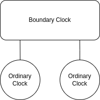

Setting up a simple PTP network
This example network configuration consists of two ordinary clocks, connected to each other through a boundary clock, all of which are running on Linux:

It should be relatively straightforward to extrapolate for more complicated networks.
Ordinary Clocks
To get PTP up and running for each of the ordinary clocks, install statime-linux on both of them:
cargo install --git https://github.com/pendulum-project/statime.git --rev 52b17e3 --bin statime-linux
statime-linux contains a CLI binary that can be used to start ordinary clock instances:
# use ifconfig to find the descriptor corresponding to the interface connected to the boundary clock
ifconfig
statime-linux --interface enp1s0f1
Ordinary clocks can also be configured through code. Doing so is very similar to configuring boundary clocks, which is explained in the next section.
Boundary Clock
Setting up a boundary clock is currently only possible through code. Start by creating a new Rust project:
cargo new boundary_clock
cd boundary_clock
In Cargo.toml, add the following dependencies:
[package]
name = "test-bc"
version = "0.1.0"
edition = "2021"
# See more keys and their definitions at https://doc.rust-lang.org/cargo/reference/manifest.html
[dependencies]
clap = { version = "3.1.6", features = ["derive"] }
log = "0.4.14"
env_logger = "0.10.0"
statime = { git = "https://github.com/pendulum-project/statime.git", rev = "52b17e3" }
statime-linux = { git = "https://github.com/pendulum-project/statime.git", rev = "52b17e3" }
tokio = { version = "1.27", features = ["full"] }
Then, in src/main.rs, add the following code:
use std::env; use statime::{ datastructures::{ common::{ClockIdentity, PortIdentity, TimeSource}, datasets::{DefaultDS, DelayMechanism, PortDS, TimePropertiesDS}, messages::SdoId, }, filters::basic::BasicFilter, port::Port, ptp_instance::PtpInstance, }; use statime_linux::{ clock::{LinuxClock, LinuxTimer, RawLinuxClock}, network::linux::{get_clock_id, LinuxRuntime}, }; #[tokio::main] async fn main() { env_logger::init(); let local_clock = LinuxClock::new(RawLinuxClock::get_realtime_clock()); let mut network_runtime = LinuxRuntime::new(false, &local_clock); let clock_identity = ClockIdentity(get_clock_id().expect("Could not get clock identity")); let default_ds = DefaultDS::new_boundary_clock(clock_identity, 2, 128, 128, 0, SdoId::default()); let time_properties_ds = TimePropertiesDS::new_arbitrary_time(false, false, TimeSource::InternalOscillator); let port_1_ds = PortDS::new( PortIdentity { clock_identity, port_number: 1, }, 1, 1, 3, 0, DelayMechanism::E2E, 1, ); let interface = env::var("PORT1") .expect("PORT1 interface descriptor not set") .parse() .expect("invalid interface descriptor for PORT1"); let port_1 = Port::new(port_1_ds, &mut network_runtime, interface).await; let port_2_ds = PortDS::new( PortIdentity { clock_identity, port_number: 2, }, 1, 1, 3, 0, DelayMechanism::E2E, 1, ); let interface = env::var("PORT2") .expect("PORT2 interface descriptor not set") .parse() .expect("invalid interface descriptor for PORT2"); let port_2 = Port::new(port_2_ds, &mut network_runtime, interface).await; let mut instance = PtpInstance::new_boundary_clock( default_ds, time_properties_ds, [port_1, port_2], local_clock, BasicFilter::new(0.25), ); instance.run(&LinuxTimer).await; }
This configures two PTP ports, binds them to interfaces described by the environment variables PORT1 and PORT2, and
starts a boundary clock PTP instance. To run the binary, execute the following commands:
# use ifconfig to find the descriptors corresponding to the interfaces connected to the ordinary clocks
ifconfig
PORT1=enp1s0f0 PORT2=enp1s0f1 cargo run